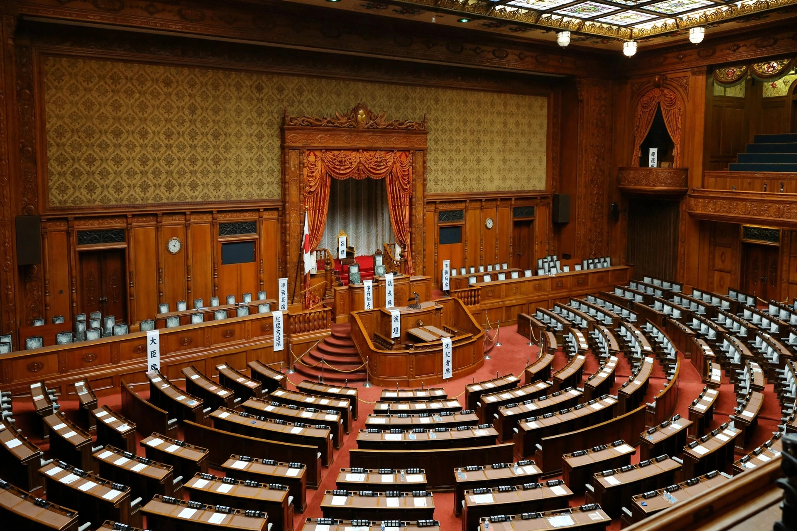

| House of Representatives 衆議院 | |
| Type | Lower house of the National Diet |
|---|---|
| Term limits | None; 4-year terms |
| Seats | 465 |
| Voting system | Parallel voting: 289 seats by first-past-the-post in single-member districts; 176 by proportional representation in 11 regional blocks |
| Meeting place | National Diet Building, Nagatachō, Tokyo |
The House of Representatives (衆議院, Shūgiin) is the lower house of the National Diet of Japan. It is composed of 465 members elected to four-year terms, although the house is frequently dissolved before a full term is served. Under the Constitution of Japan, the House of Representatives is more powerful than the House of Councillors: it can override the upper house on most legislation, and its decisions prevail on the budget, the approval of treaties, and the designation of the Prime Minister.
The House of Representatives was first convened in 1890 as the elected lower house of the Imperial Diet under the Meiji Constitution, although the franchise was initially restricted to men paying a substantial amount of direct tax — roughly one percent of the population. Universal male suffrage followed in 1925. After the Second World War, the present house was established under the 1947 Constitution, with women voting for the first time in the 1946 general election.
Since the electoral reform of 1994, members have been elected by parallel voting. In the most recent apportionment, 289 members are chosen by first-past-the-post voting in single-member districts and 176 through party-list proportional representation in eleven regional blocks, using the D'Hondt method. Citizens may vote from the age of 18; candidates must be at least 25.
Where the two houses disagree on the designation of the Prime Minister, the budget, or treaties, the decision of the House of Representatives becomes the decision of the Diet. Ordinary bills rejected by the House of Councillors can still be enacted if the House of Representatives passes them a second time with a two-thirds majority of members present. Only the House of Representatives may pass a motion of no confidence in the Cabinet, which then must resign en masse or dissolve the house and call a general election. The house may also be dissolved by the Emperor, on the advice of the Cabinet, under Article 7 of the Constitution.
General elections must be held at least every four years, but in practice they occur more frequently because of dissolutions. The most recent general election was held on 27 October 2024, at which the governing Liberal Democratic Party lost its single-party majority for the first time since 2009, though it remained the largest party.